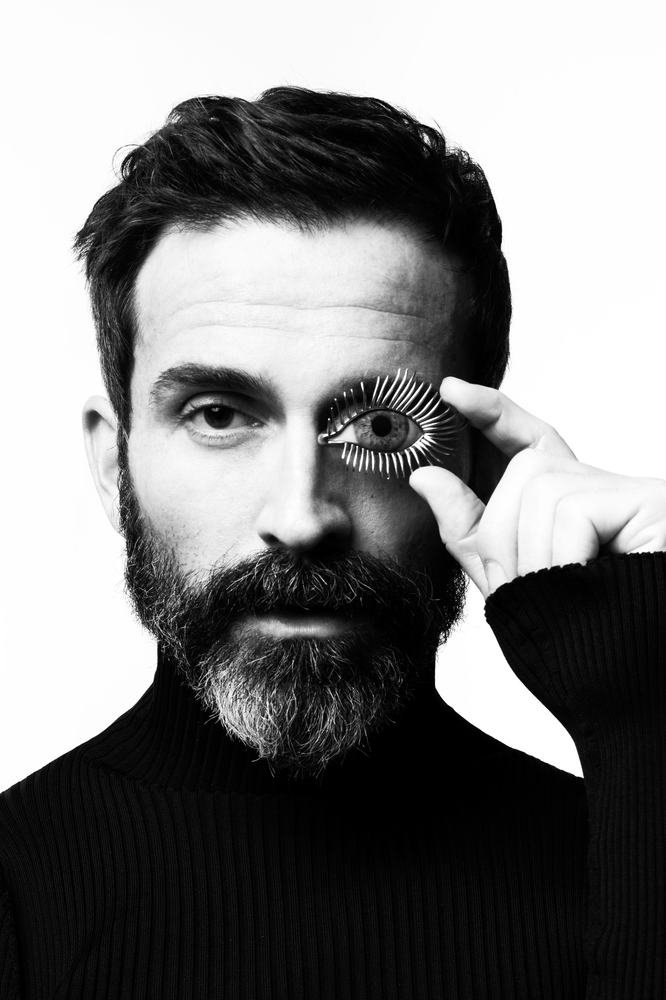

Schiaparelli celebra il primo anniversario di Daniel Roseberry alla
guida della maison con un progetto visual, ‘The Next Chapter’“Com'è
l'arte? Che cos'è l'identità? Come ci vestiamo per la fine del mondo?”
Domande complesse, che esemplificano quelli che sono i dubbi più fantasiosi
di una contemporaneità che non si limita a interrogarsi sullo scibile.
Domande a cui solo l’artista può rispondere, nella sua capacità di proiettarsi
in dimensioni metafisiche di creatività e immaginazione. “Voglio offrire
le mie risposte a queste domande e una fantasia - un sogno - che sia
rilevante e necessario per oggi.” Così Daniel Roseberry commentava il
suo arrivo alla maison Schiaparelli nell'aprile 2019: le sue sono parole
attuali e che contengono una promessa – aprire le porte della visione e
lasciare che il fantastico strabordi nel concreto.

Un anno di lavoro separa Roseberry dalla sua prima collezione,
dall'inizio di questo nuovo capitolo di Schiaparelli. Nuovo capitolo
di episodi inediti, in cui cambia il narratore, ma la storia resta
la stessa, scritta in un unico libro – per comprendere le pagine che
seguono, bisogna ricordare quelle già lette. Missione del designer
è quella di attualizzare l’heritage di Elsa Schiaparelli: non modificarlo,
non adattarlo alle esigenze moderne, ma farlo evolvere seguendo un
processo naturale, trapiantandone gli stessi principi in un terreno
diverso. Un’azione rigeneratrice che Roseberry attua basandosi sul
pilastro dell’estetica Schiaparelli: la donna come opera d’arte in
movimento.
“Disegnare abiti, sia detto di sfuggita, non è una professione ma un’arte.
Un vestito non rimane attaccato al muro come un quadro, e nemmeno conduce
la lunga esistenza intatta e preservata di un libro” – la dichiarazione
di Elsa Schiaparelli al giornalista François Baudot, punto di partenza
per Roseberry e la sua interpretazione della couture. Per la collezione
autunno inverno 2020, un tavolo da disegno è posto al centro della passerella,
il direttore creativo si siede, con cuffie alle orecchie, e inizia a disegnare.
Quasi come una proiezione del suo immaginario mentale, le modelle sfilano,
in un’atmosfera onirica pervasa di meraviglia che non appare mai del tutto
reale. Blu navy, tangerine, verde kaki, nero e bianco. Poco, pochissimo rosa
– c’è un’intera tavolozza cui attingere, perché limitarsi a un’unica sfumatura?
Sin da questa prima collezione si percepisce l’impronta unica di Roseberry,
il suo gusto per il tessuto come materia duttile con cui scolpire il corpo
femminile. Gli abiti sono ricchi e strutturati ma fluidi, seguono e accompagnano
il movimento, increspandosi e creando giochi di luce. Elsa è in un abito con
trama a rete ricoperto di cristalli, in un crop top che è un nido di coccinelle
– ribelli, che non stanno al loro posto, va vagano su petto e spalle – e nei fiori,
in stampe ricche di boccioli multicolore, un simbolo prezioso per la maison Schiaparelli,
emblema della percezione surrealista e immaginifica che la couturière aveva del mondo
circostante.
“Sarebbe stato proprio meraviglioso avere il volto coperto di fiori
come un incantevole giardino! E se fosse riuscita a farsi spuntare
fiori su tutta la faccia, sarebbe stata unica al mondo. Nasturzi,
margherite, campanelle tutti in piena fioritura! Con qualche difficoltà
ottenne i semi dal giardiniere e se li piantò in gola, nelle orecchie,
in bocca. Con il calore del suo corpo, pensava, sarebbero sbocciati più
in fretta che non nel terreno là fuori. [..] Per poco non soffocò” –
racconta parlando di sé in terza persona Elsa Schiaparelli nella sua
autobiografia Shocking Life (1954), un’immagine così potente da ispirare
persino Salvador Dalì e la sua opera Printemps Nécrophilique.
Il rapporto con Dalì e il legame con l’arte ispirano Daniel Roseberry
per la collezione Haute Couture primavera estate 2020. Il corpo è la
tela bianca su cui condensare un principio di dualismo, di immagini
opposte ma al contempo speculari di giorno e notte, di seduzione e
pudore, di arte e moda.
“Sono arrivato a immaginare due personaggi, una Surrealista e una
Seduttrice. E sono queste due figure – e lo spazio immaginario che
le separa – che celebro in questa collezione. Per il carattere
femminile, diurno, ho creato ampi costumi in lana leggera drappeggiata
che distillano nonchalance. Declinata in una tavolozza di cioccolato,
caramello, panna, navy, nero. E per la Seduttrice nottambula, abiti
scintillanti in faille di seta e raso iper saturi, in tinta nero,
bianco e blu reale.”
Un dualismo sublimato dalla tattilità, dalla dimensione unilaterale
dei sensi che percepiscono, senza interrogarsi troppo, le increspature
della lana asciutta, la morbidezza, come di burro, della pelle lavorata,
da una fisicità resa capolavoro dal gioiello. Monili indisciplinati, che
non si soffermano sulle posizioni d’ordinanza, vagando sul viso, sulle
braccia, su clavicole e ciglia. Occhi, mani, denti e lo scheletro che
fuoriesce dal corpo, oltrepassa il tessuto e si impone come decorazione,
omaggio allo Skeleton Dress del 1938, nato da un bozzetto donato a Elsa
da Dalì.
In un anno di arte, moda e bellezza, Daniel Roseberry si è distaccato
dall’heritage tradizionale di Schiaparelli – il colore rosa, l’eccesso
ad oltranza – ma ne ha invece riscoperto l’essenza più pura partendo
dalle radici, dalla prima boutique parigina, Pour le Sport, aperta nel
1927 in Rue de la Paix, dove un abbigliamento funzionale e pratico era
inserito in un contesto marinaresco, un design di corde e vele da cui
pendevano sciarpe e maglioni. Non indossiamo un quadro perché un quadro
è di tutti, è un’immagine universale che appartiene al mondo, e questo
lo rende inarrivabile. Non indossiamo un quadro perché non è concepito
per il corpo, è scomodo, spigoloso, infilarlo implica strappare la tela.
Indossiamo un abito perché esso esprime qualcosa della nostra identità,
la completa e l’amplifica in un modo totalmente personale. È nato per
adattarsi al corpo, senza non ha supporto, e per questo, la moda di
Roseberry traspone lo straordinario nell'ordinario, e lascia che
l’immaginazione vaghi nella quotidianità per renderla magnifica.
Cosa indosseremo alla fine del mondo? Considerando che la moda è
energia, è bellezza, è vita, la risposta di Roseberry, e quella
di Elsa, è forse un’altra domanda: importa davvero?